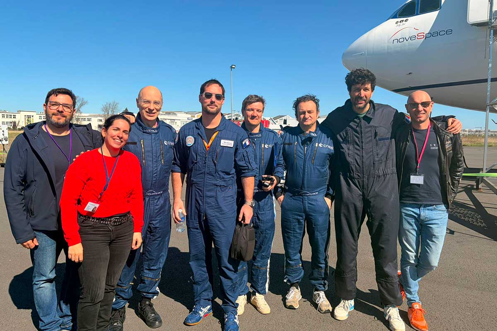

IRIS — Interventional Radiology In Space
Association dédiée à la radiologie interventionnelle en environnements extrêmes — des vols spatiaux habités longue durée aux zones les plus isolées sur Terre. Présidée par le Dr Jérôme Soussan.

Sur une mission vers Mars, le délai de communication avec la Terre rend toute téléassistance médicale en temps réel impossible. L'équipage doit être capable de gérer, en autonomie, traumatismes, hémorragies, abcès, occlusions urinaires — sans anesthésie générale, sans équipement lourd et dans un volume contraint. La radiologie interventionnelle, technique mini-invasive, guidée par l'image et déjà indispensable à la médecine contemporaine, devient alors une option de choix.
IRIS est une association, née à partir d'un projet du LIIE-CERIMED, présidée par le Dr Jérôme Soussan. Elle fédère les équipes françaises et internationales autour de la radiologie interventionnelle en environnement extrême, en partenariat avec la Société Française de Radiologie (SFR), l'Institut de Médecine et de Physiologie Spatiales (MEDES), le Centre National d'Études Spatiales (CNES) et Novespace, opérateur des vols paraboliques européens.
Les deux axes de l'association
Le Challenge MITBO
Le Challenge MITBO (Mars Interventional Toolbox), lancé par le Pr Vincent Vidal auprès des équipes françaises de radiologie interventionnelle, a permis de prototyper une boîte à outils miniaturisée compatible avec les contraintes spatiales (volume, masse, sécurité, consommables). Elle concentre le minimum vital pour assurer, en autonomie, un large éventail de gestes de radiologie interventionnelle d'urgence.
Premiers résultats en apesanteur
Lors de la 170e campagne de vols paraboliques du CNES (mars 2026), l'équipe IRIS a démontré la faisabilité d'une ponction-drainage rénal en microgravité, à bord de l'A310 Zéro-G opéré par Novespace. Ces résultats constituent une étape clé vers la médecine interventionnelle spatiale.
Composition de l'équipe IRIS (campagne mars 2026)
- Pr Vincent Vidal (AP-HM / LIIE)
- Dr Farouk Tradi (AP-HM / LIIE)
- Dr Jérôme Soussan (AP-HM)
- Dr Guillaume Louis (Timone, AP-HM)
- Dr Éva Fourage (CHU de Bordeaux)
- Pr Julien Frandon (CHU de Nîmes)
- — équipe étendue à 12 chercheurs.
Publication de référence
- Vidal V, Boyer L, Luciani A, et al. Bringing Interventional Radiology to Mars! CardioVasc Intervent Radiol, 2023 ; 46(4):425-427. PMID : 36918421. DOI
Des retombées au-delà de l'espace
Le « kit IRIS » n'est pas seulement pensé pour l'orbite et pour Mars. Les contraintes spatiales — autonomie, encombrement minimal, robustesse, protocoles simplifiés — sont exactement celles qu'imposent les zones isolées sur Terre : déserts médicaux, terrains de catastrophe, navires, bases polaires, zones de conflit. Chaque avancée d'IRIS alimente aussi la capacité du LIIE à améliorer les soins dans les environnements extrêmes civils.
Pour aller plus loin
- AP-HM — La radiologie interventionnelle sur orbite (27 mars 2026)
- AP-HM — La radiologie interventionnelle de l'espace (décembre 2023)
- SFR — Radiologie interventionnelle en apesanteur : vers la médecine spatiale de demain
- Thema-Radiologie — Le Challenge MITBO ouvre la voie à la RI dans l'Espace
- FranceInfo — Des radiologues testent une intervention en apesanteur
- Healthcare-in-Europe — Taking French interventional radiology to space